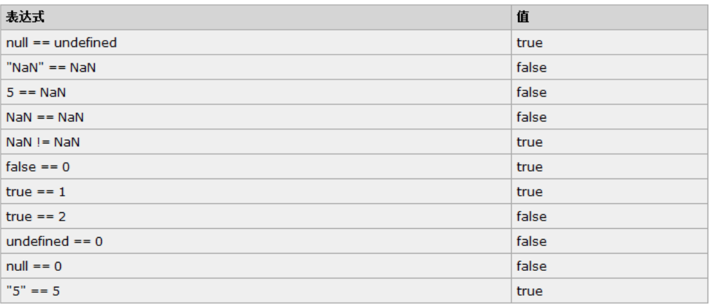

原文连接:https://www.cnblogs.com/lsf123456/p/11266331.html
一、概述
1992年Nombas开发出C-minus-minus(C--)的嵌入式脚本语言(最初绑定在CEnvi软件中).后将其改名ScriptEase.(客户端执行的语言)
Netscape(网景)接收Nombas的理念,(Brendan Eich)在其Netscape Navigator 2.0产品中开发出一套livescript的脚本语言.Sun和Netscape共同完成.后改名叫Javascript
微软随后模仿在其IE3.0的产品中搭载了一个JavaScript的克隆版叫Jscript.
为了统一三家,ECMA(欧洲计算机制造协会)定义了ECMA-262规范.国际标准化组织及国际电工委员会（ISO/IEC）也采纳 ECMAScript 作为标准（ISO/IEC-16262）。从此，Web 浏览器就开始努力（虽然有着不同的程度的成功和失败）将 ECMAScript 作为 JavaScript 实现的基础。EcmaScript是规范.
Javascript 在开发中绝大多数情况是基于对象的.也是面向对象的
一个完整的 JavaScript 实现是由以下 3 个不同部分组成的：
- 核心（ECMAScript）
- 文档对象模型（DOM） Document object model (整合js，css，html)
- 浏览器对象模型（BOM） Broswer object model（整合js和浏览器）
ECMAScript 描述了以下内容：
- 语法
- 类型
- 语句
- 关键字
- 保留字
- 运算符
- 对象 (封装 继承 多态) 基于对象的语言.使用对象.
二、js的引入方式
1. 嵌入式
<script>
alert(123)
</script>
2. 导入式
<script src="js/test.js"></script>三、JavaScript基础知识
1. 基础规范
- 每行结束可以不加分号. 没有分号会以换行符作为每行的结束
a=1;b=2;
a=1 b=2;------错误
a=1
b=2
//推荐
a=1;
b=2;
{
a=1;
b=2;
//推荐加tab
a=1;
b=2;
}
- 注释支持多行注释和单行注释 /* */ //
- 使用{}来封装代码块
2. 变量
x=5 y=6 z=x+y
- 变量是弱类型的（很随便）
- 声明变量时不用声明变量的类型，统一使用var关键字
var a
- 一行可以声明多个变量.并且可以是不同类型.
var name="Tom",age=18
- 声明变量时,可以不用var. 如果不用var 那么它是全局变量.
- 变量需要遵循命名规则
Camel 标记法 首字母是小写的，接下来的字母都以大写字符开头。例如： var myTestValue = 0, mySecondValue = "hi"; Pascal 标记法 首字母是大写的，接下来的字母都以大写字符开头。例如： var MyTestValue = 0, MySecondValue = "hi"; 匈牙利类型标记法 在以 Pascal 标记法命名的变量前附加一个小写字母（或小写字母序列），说明该变量的类型。例如，i 表示整数，s 表示字符串，例如: var iMyTestValue = 0, sMySecondValue = "hi";
3. 常量和标识符
常量 ：直接在程序中出现的数据值
标识符：
- 由不以数字开头的字母、数字、下划线(_)、美元符号($)组成
- 常用于表示函数、变量等的名称
- 例如：_abc,$abc,abc,abc123是标识符，而1abc不是
- JavaScript语言中代表特定含义的词称为保留字，不允许程序再定义为标识符
四、数据类型
1. 数字类型（Number）
- 最基本的数据类型
- 不区分整型数值和浮点型数值
- 所有数字都采用64位浮点格式存储，相当于Java和C语言中的double格式
- 能表示的最大值是±1.7976931348623157 x 10308
- 能表示的最小值是±5 x 10 -324
整数：
在JavaScript中10进制的整数由数字的序列组成
精确表达的范围是
-9007199254740992 (-253) 到 9007199254740992 (253)
超出范围的整数，精确度将受影响
浮点数：
使用小数点记录数据
例如：3.4，5.6
使用指数记录数据
例如：4.3e23 = 4.3 x 10^23
16进制和8进制数的表达
16进制数据前面加上0x，八进制前面加0
16进制数是由0-9,A-F等16个字符组成
8进制数由0-7等8个数字组成
NaN:属于Number类型的一个特殊值,当遇到将字符串转成数字无效时,就会得到一个NaN数据
2. 字符串（String）
由Unicode字符、数字、标点符号组成的序列
字符串常量首尾由单引号或双引号括起
JavaScript中没有字符类型
常用特殊字符在字符串中的表达
字符串中部分特殊字符必须加上右划线\
常用的转义字符 \n:换行 \':单引号 \":双引号 \\:右划线3. 布尔型（Boolean）
Boolean类型仅有两个值：true和false，也代表1和0，实际运算中true=1,false=0
布尔值也可以看作on/off、yes/no、1/0对应true/false4. Null和Undefined
Undefined 类型
Undefined 类型只有一个值，即 undefined。当声明的变量未初始化时，该变量的默认值是 undefined。
当函数无明确返回值时，返回的也是值 "undefined";
Null 类型
另一种只有一个值的类型是 Null，它只有一个专用值 null，即它的字面量。值 undefined 实际上是从值 null 派生来的，因此 ECMAScript 把它们定义为相等的。
尽管这两个值相等，但它们的含义不同。undefined 是声明了变量但未对其初始化时赋予该变量的值，null 则用于表示尚未存在的对象（在讨论 typeof 运算符时，简单地介绍过这一点）。如果函数或方法要返回的是对象，那么找不到该对象时，返回的通常是 null。
5. 数据类型转换
JavaScript属于松散类型的程序语言
变量在声明的时候并不需要指定数据类型
变量只有在赋值的时候才会确定数据类型
表达式中包含不同类型数据则在计算过程中会强制进行类别转换
数字 + 字符串：数字转换为字符串
数字 + 布尔值：true转换为1，false转换为0
字符串 + 布尔值：布尔值转换为字符串true或false
强制类型转换函数
函数parseInt： 强制转换成整数 例如parseInt("6.12")=6 ; parseInt(“12a")=12 ; parseInt(“a12")=NaN ;parseInt(“1a2")=1
函数parseFloat： 强制转换成浮点数 parseFloat("6.12")=6.12
函数eval： 将字符串强制转换为表达式并返回结果 eval("1+1")=2 ; eval("1<2")=true
6. 类型查询（typeof）
ECMAScript 提供了 typeof 运算符来判断一个值是否在某种类型的范围内。可以用这种运算符判断一个值是否表示一种原始类型：如果它是原始类型，还可以判断它表示哪种原始类型。
函数typeof ：查询数值当前类型
(string / number / boolean / object )
例如typeof("test"+3) "string"
例如typeof(null) "object "
例如typeof(true+1) "number"
例如typeof(true-false) "number"
五、运算符
1. 算数运算符
加(＋)、 减(－)、 乘(*) 、除(/) 、余数(% ) 加、减、乘、除、余数和数学中的运算方法一样 例如：9/2=4.5，4*5=20，9%2=1 -除了可以表示减号还可以表示负号 例如：x=-y +除了可以表示加法运算还可以用于字符串的连接 例如："abc"+"def"="abcdef"
递增（++）、递减（--）
假如x=2，那么x++表达式执行后的值为3，x--表达式执行后的值为1 i++相当于i=i+1，i--相当于i=i-1 递增和递减运算符可以放在变量前也可以放在变量后：--i var i=1; console.log(i++); console.log(++i); console.log(i--); console.log(--i); i++ 和 ++i 在理论上的区别是： i++：是先把i拿出来使用，然后再+1； ++i ：是先把i+1，然后再拿出来使用；
var a=1;
var b=1;
a=-a; //a=-1
var c="10";
alert(typeof (c));
c=+c; //类型转换
alert(typeof (c));
// -------------------
var d="yuan";
d=+d;
alert(d);//NaN:属于Number类型的一个特殊值,当遇到将字符串转成数字无效时,就会得到一个NaN数据
alert(typeof(d));//Number
//NaN特点:
var n=NaN;
alert(n>3);
alert(n<3);
alert(n==3);
alert(n==NaN);
alert(n!=NaN);//NaN参与的所有的运算都是false,除了!=
2. 逻辑运算符
等于 ( == ) 、不等于( != ) 、 大于( > ) 、 小于( < ) 大于等于(>=) 、小于等于(<=)
与 (&&) 、或(||) 、非(!)
逻辑 AND 运算符(&&)
逻辑 AND 运算的运算数可以是任何类型的，不止是 Boolean 值。
如果某个运算数不是原始的 Boolean 型值，逻辑 AND 运算并不一定返回 Boolean 值：
- 如果某个运算数是 null，返回 null。
- 如果某个运算数是 NaN，返回 NaN。
- 如果某个运算数是 undefined，返回undefined。
逻辑 OR 运算符(||)
与逻辑 AND 运算符相似，如果某个运算数不是 Boolean 值，逻辑 OR 运算并不一定返回 Boolean 值
3. 赋值运算符
赋值 =
JavaScript中=代表赋值，两个等号==表示判断是否相等
例如，x=1表示给x赋值为1
if (x==1){...}程序表示当x与1相等时
if(x==“on”){…}程序表示当x与“on”相等时
配合其他运算符形成的简化表达式
例如i+=1相当于i=i+1，x&=y相当于x=x&y
4. 等性运算符
执行类型转换的规则如下：
- 如果一个运算数是 Boolean 值，在检查相等性之前，把它转换成数字值。false 转换成 0，true 为 1。
- 如果一个运算数是字符串，另一个是数字，在检查相等性之前，要尝试把字符串转换成数字。
- 如果一个运算数是对象，另一个是字符串，在检查相等性之前，要尝试把对象转换成字符串。
- 如果一个运算数是对象，另一个是数字，在检查相等性之前，要尝试把对象转换成数字。
在比较时，该运算符还遵守下列规则：
- 值 null 和 undefined 相等。
- 在检查相等性时，不能把 null 和 undefined 转换成其他值。
- 如果某个运算数是 NaN，等号将返回 false，非等号将返回 true。
- 如果两个运算数都是对象，那么比较的是它们的引用值。如果两个运算数指向同一对象，那么等号返回 true，否则两个运算数不等。

5. 关系运算符
var bResult = "Blue" < "alpha"; alert(bResult); //输出 true
在上面的例子中，字符串 "Blue" 小于 "alpha"，因为字母 B 的字符代码是 66，字母 a 的字符代码是 97。
比较数字和字符串
另一种棘手的状况发生在比较两个字符串形式的数字时，比如：
var bResult = "25" < "3"; alert(bResult); //输出 "true"
上面这段代码比较的是字符串 "25" 和 "3"。两个运算数都是字符串，所以比较的是它们的字符代码（"2" 的字符代码是 50，"3" 的字符代码是 51）。
不过，如果把某个运算数该为数字，那么结果就有趣了：
var bResult = "25" < 3; alert(bResult); //输出 "false"
这里，字符串 "25" 将被转换成数字 25，然后与数字 3 进行比较，结果不出所料。
总结：
比较运算符两侧如果一个是数字类型,一个是其他类型,会将其类型转换成数字类型.
比较运算符两侧如果都是字符串类型,比较的是最高位的asc码,如果最高位相等,继续取第二位比较.6. Boolean运算符
| 参数类型 | 结果 |
|---|---|
| Undefined | false |
| Null | false |
| Boolean | 结果等于输入的参数（不转换） |
| Number | 如果参数为 +0, -0 或 NaN，则结果为 false；否则为 true。 |
| String | 如果参数为空字符串，则结果为 false；否则为 true。 |
| Object | true |
六、条件控制
1. if 语句
if-else基本格式
if (表达式){
语句１; ......
}
else{
语句２; .....
}
if语句嵌套格式
if (表达式1) {
语句1;
}else if (表达式2){
语句2;
}else if (表达式3){
语句3;
} else{
语句4;
}
2. switch语句
switch基本格式
switch (表达式) {
case 值1:语句1;break;
case 值2:语句2;break;
case 值3:语句3;break;
default:语句4;
}
1.switch用来根据一个整型值进行多路分支，并且编译器可以对多路分支进行优化
2.switch-case只将表达式计算一次,然后将表达式的值与每个case的值比较,进而选 择执行哪一个case的语句块
3.if..else 的判断条件范围较广，每条语句基本上独立的，每次判断时都要条件加载 一次。
所以在多路分支时用switch比if..else if .. else结构要效率高。
3. for循环
for循环基本格式
for (初始化;条件;增量){
语句1; ...
}
实现条件循环，当条件成立时，执行语句1，否则跳出循环体
4. while循环
while循环基本格式
while (条件){
语句1； ...
}
运行功能和for类似，当条件成立循环执行语句花括号{}内的语句，否则跳出循环
七、异常处理
try {
//这段代码从上往下运行，其中任何一个语句抛出异常该代码块就结束运行
}
catch (e) {
// 如果try代码块中抛出了异常，catch代码块中的代码就会被执行。
//e是一个局部变量，用来指向Error对象或者其他抛出的对象
}
finally {
//无论try中代码是否有异常抛出（甚至是try代码块中有return语句），finally代码块中始终会被执行。
}
注：主动抛出异常 throw Error('xxxx')
八、ECMA对象
从传统意义上来说，ECMAScript 并不真正具有类。事实上，除了说明不存在类，在 ECMA-262 中根本没有出现“类”这个词。ECMAScript 定义了“对象定义”，逻辑上等价于其他程序设计语言中的类。
var o = new Object();
对象的概念与分类：
- 由ECMAScript定义的本地对象.独立于宿主环境的 ECMAScript 实现提供的对象.(native object)
- ECMAScript 实现提供的、独立于宿主环境的所有对象，在 ECMAScript 程序开始执行时出现.这意味着开发者不必明确实例化内置对象，它已被实例化了。ECMA-262 只定义了两个内置对象，即 Global 和 Math （它们也是本地对象，根据定义，每个内置对象都是本地对象）。（built-in object）
- 所有非本地对象都是宿主对象（host object），即由 ECMAScript 实现的宿主环境提供的对象。所有 BOM 和 DOM 对象都是宿主对象。
object对象：ECMAScript 中的所有对象都由这个对象继承而来；Object 对象中的所有属性和方法都会出现在其他对象中
ToString() : 返回对象的原始字符串表示。 ValueOf() : 返回最适合该对象的原始值。对于许多对象，该方法返回的值都与 ToString() 的返回值相同。
11种内置对象
包括：
Array ,String , Date, Math, Boolean, Number Function, Global, Error, RegExp , Object
简介：
在JavaScript中除了null和undefined以外其他的数据类型都被定义成了对象，也可以用创建对象的方法定义变量，String、Math、Array、Date、RegExp都是JavaScript中重要的内置对象，在JavaScript程序大多数功能都是通过对象实现的
1. String对象
创建String对象
//创建字符串对象
var str1="hello"
var str2=new String("hello")
console.log(typeof str1) //String
console.log(typeof str2) //Object
String对象的属性
length 获取字符串长度
str1="hello" console.log(str1.length)
String对象的方法
格式编排
String对象提供了一组针对HTML格式的方法，如x.anchor()返回锚定义字符串<a>x</a>， x.bold()返回粗体表示字符串<b>x</b>，x.sup()返回上标格式字符串<sup>x</sup>。
var str1="hello" console.log(str1.bold()) //<b>hello<b> console.log(str1.italics()) //<i>hello<i> console.log(str1.anchor()) //<a>hello<a>
大小写转换
var str1="AbcdEfgh"; var str2=str1.toLowerCase(); var str3=str1.toUpperCase(); alert(str2); //结果为"abcdefgh" alert(str3); //结果为"ABCDEFGH"
获取指定字符
x.charAt(index)
x.charCodeAt(index)
- x代表字符串对象
- index代表字符位置
- index从0开始编号
- charAt返回index位置的字符
- charCodeAt返回index位置的Unicode编码
var x="hello world" console.log(x.charAt(6)) //w console.log(x.charCodeAt(6)) //119
查询字符串
x.indexOf(findstr,index)
x.lastIndexOf(findstr)
var x="hello world"
console.log(x.indexOf("l")) //2
console.log(x.lastIndexOf("l")) //9
截取字符串
x.substr(start, length)
x.substring(start, end)
- x代表字符串对象
- start表示开始位置
- length表示截取长度
- end是结束位置加1
- 第一个字符位置为0
var str1="abcdefgh"; var str2=str1.substr(2,4); var str3=str1.substring(2,4); alert(str2); //结果为"cdef" alert(str3); //结果为"cd"
切片
x.slice(start, end)
var str1="abcdefgh"; var str2=str1.slice(2,4); var str3=str1.slice(4); var str4=str1.slice(2,-1); var str5=str1.slice(-3,-1); alert(str2); //结果为"cd" alert(str3); //结果为"efgh" alert(str4); //结果为"cdefg" alert(str5); //结果为"fg"
替换字符串
x.replace(findstr,tostr)
var str1="abcdefgh";
var str2=str1.replace("cd","aaa");
alert(str2);
//结果为"abaaaefgh"
分割字符串
x.split(str)
var str1="a,b,c,d,e"
var strArray=str1.split(",")
console.log(strArray) //Array(5) [ "a", "b", "c", "d", "e" ]
连接字符串
y=x.concat(addstr)
var str1="abcd";
var str2=str1.concat("efgh");
alert(str2);
//结果为"abcdefgh"
2. Array对象
java中数组的特性, 规定是什么类型的数组,就只能装什么类型.只有一种类型.
js中的数组特性1: js中的数组可以装任意类型,没有任何限制.2: js中的数组,长度是随着下标变化的.用到多长就有多长.
创建数组对象
创建方式1: var a=[1,2,3]; 创建方式2: var a=new Array(); // 创建数组时允许指定元素个数也可以不指定元素个数。 new Array(size);//if 1个参数且为数字,即代表size,not content
//创建二维数组
var cnweek=new Array(7);
for (var i=0;i<=6;i++){
cnweek[i]=new Array(2);
}
Array对象的属性
length 获取数组元素的个数
Array对象的方法


连接数组-join方法
x.join(bystr)
var arr1=[1, 2, 3, 4, 5, 6, 7];
var str1=arr1.join("-");
alert(str1);
//结果为"1-2-3-4-5-6-7"
连接数组-concat方法
x.concat(value,...)
var a = new Array(1,2,3); var b=a.concat(4,5) ; alert(a.toString()); //返回结果为1,2,3 alert(b.toString()); //返回结果为1,2,3,4,5
数组排序-reverse sort
x.reverse()
x.sort()
var arr1=[32, 12, 111, 444];
//var arr1=["a","d","f","c"];
arr1.reverse(); //颠倒数组元素
alert(arr1.toString());
//结果为444,111,12,32
arr1.sort(); //排序数组元素
alert(arr1.toString());
//结果为111,12,32,444
//------------------------------
arr=[1,5,2,100];
//arr.sort();
//alert(arr);
//如果就想按着数字比较呢?
function intSort(a,b){
if (a>b){
return 1;//-1
}
else if(a<b){
return -1;//1
}
else {
return 0
}
}
arr.sort(intSort);
alert(arr);
function IntSort(a,b){
return a-b;
}
数组切片-slice
x.slice(start, end)
var arr1=['a','b','c','d','e','f','g','h']; var arr2=arr1.slice(2,4); var arr3=arr1.slice(4); var arr4=arr1.slice(2,-1); alert(arr2.toString()); //结果为"c,d" alert(arr3.toString()); //结果为"e,f,g,h" alert(arr4.toString()); //结果为"c,d,e,f,g"
删除子数组
x. splice(start, deleteCount, value, ...)
- x代表数组对象
- splice的主要用途是对数组指定位置进行删除和插入
- start表示开始位置索引
- deleteCount删除数组元素的个数
- value表示在删除位置插入的数组元素
- value参数可以省略
var a = [1,2,3,4,5,6,7,8]; a.splice(1,2); //a变为 [1,4,5,6,7,8] alert(a.toString()); a.splice(1,1); //a变为[1,5,6,7,8] alert(a.toString()); a.splice(1,0,2,3); //a变为[1,2,3,5,6,7,8] alert(a.toString());
数组的进出栈操作
x.push(value, ...) 压栈
x.pop() 弹栈
x.unshift(value,...)
x.shift()
var arr1=[1,2,3]; arr1.push(4,5); alert(arr1); //结果为"1,2,3,4,5" arr1.push([6,7]); alert(arr1) //结果为"1,2,3,4,5,6,7" arr1.pop(); alert(arr1); //结果为"1,2,3,4,5" var arr1=[1,2,3]; arr1.unshift(4,5); alert(arr1); //结果为"4,5,1,2,3" arr1. unshift([6,7]); alert(arr1); //结果为"6,7,4,5,1,2,3" arr1.shift(); alert(arr1); //结果为"4,5,1,2,3"
3. Date对象
创建Date对象
//方法1：不指定参数
var nowd1=new Date();
console.log(nowd1.toLocaleString( ));//2019/7/31 下午5:25:30
//方法2：参数为日期字符串
var nowd2=new Date("2004/3/20 11:12");
console.log(nowd2.toLocaleString( ));//2004/3/20 上午11:12:00
var nowd3=new Date("04/03/20 11:12");
console.log(nowd3.toLocaleString( ));//2020/4/3 上午11:12:00
//方法3：参数为毫秒数
var nowd3=new Date(5000);
console.log(nowd3.toLocaleString( ));//1970/1/1 上午8:00:05
console.log(nowd3.toUTCString());//Thu, 01 Jan 1970 00:00:05 GMT
//方法4：参数为年月日小时分钟秒毫秒
var nowd4=new Date(2004,2,20,11,12,0,300);
console.log(nowd4.toLocaleString( ));//2004/3/20 上午11:12:00
//毫秒并不直接显示
Date对象的方法
获取日期和时间
获取日期和时间 getDate() 获取日 getDay () 获取星期 getMonth () 获取月（0-11） getFullYear () 获取完整年份 getYear () 获取年 getHours () 获取小时 getMinutes () 获取分钟 getSeconds () 获取秒 getMilliseconds () 获取毫秒 getTime () 返回累计毫秒数(从1970/1/1午夜)
设置日期和时间
//设置日期和时间
//setDate(day_of_month) 设置日
//setMonth (month) 设置月
//setFullYear (year) 设置年
//setHours (hour) 设置小时
//setMinutes (minute) 设置分钟
//setSeconds (second) 设置秒
//setMillliseconds (ms) 设置毫秒(0-999)
//setTime (allms) 设置累计毫秒(从1970/1/1午夜)
var x=new Date();
x.setFullYear (1997); //设置年1997
x.setMonth(7); //设置月7
x.setDate(1); //设置日1
x.setHours(5); //设置小时5
x.setMinutes(12); //设置分钟12
x.setSeconds(54); //设置秒54
x.setMilliseconds(230); //设置毫秒230
document.write(x.toLocaleString( )+"<br>");
//返回1997年8月1日5点12分54秒
x.setTime(870409430000); //设置累计毫秒数
document.write(x.toLocaleString( )+"<br>");
//返回1997年8月1日12点23分50秒
日期和时间的转换
日期和时间的转换: getTimezoneOffset():8个时区×15度×4分/度=480; 返回本地时间与GMT的时间差，以分钟为单位 toUTCString() 返回国际标准时间字符串 toLocalString() 返回本地格式时间字符串 Date.parse(x) 返回累计毫秒数(从1970/1/1午夜到本地时间) Date.UTC(x) 返回累计毫秒数(从1970/1/1午夜到国际时间)
4. RegExp对象
//RegExp对象
// 在表单验证时使用该对象验证用户填入的字符串是否符合规则.
//创建正则对象方式1 参数1 正则表达式 参数2 验证模式 g global / i 忽略大小写. //参数2一般填写g就可以，也有“gi”.
// 用户名 首字母必须是英文, 除了第一位其他只能是英文数字和_ . 长度最短不能少于6位 最长不能超过12位
//----------------------------创建方式1
/* var reg1 = new RegExp("^[a-zA-Z][a-zA-Z0-9_]{5,11}$","g");
//
//验证字符串
var str = "bc123";
alert(reg1.test(str));// true
//----------------------------创建方式2 /填写正则表达式/匹配模式;
var reg2 = /^[a-zA-Z][a-zA-Z0-9_]{5,11}$/g;
alert(reg2.test(str));// true
*/
//-------------------------------正则对象的方法-------------------
//test方法 ==> 测试一个字符串是否复合 正则规则. 返回值是true 和false.
//-------------------------String 中与正则结合的4个方法------------------.
// macth search split replace
var str = "hello world";
//alert(str.match(/o/g)); //查找字符串中 复合正则的 内容.
//alert(str.search(/h/g));// 0 查找字符串中符合正则表达式的内容位置
//alert(str.split(/o/g)); // 按照正则表达式对字符串进行切割. 返回数组;
alert(str.replace(/o/g, "s")); // hells wsrld 对字符串按照正则进行替换.
5. Math对象
//Math对象 //该对象中的属性方法 和数学有关. //Math是内置对象 , 与Global的不同之处是, 在调用时 需要打出 "Math."前缀. abs(x) 返回数的绝对值。 exp(x) 返回 e 的指数。 floor(x)对数进行下舍入。 log(x) 返回数的自然对数（底为e）。 max(x,y) 返回 x 和 y 中的最高值。 min(x,y) 返回 x 和 y 中的最低值。 pow(x,y) 返回 x 的 y 次幂。 random() 返回 0 ~ 1 之间的随机数。 round(x) 把数四舍五入为最接近的整数。 sin(x) 返回数的正弦。 sqrt(x) 返回数的平方根。 tan(x) 返回角的正切。
6. Function对象
函数定义
function 函数名 (参数){
函数体;
return 返回值;
}
var 函数名 = new Function("参数1","参数n","function_body");
功能说明：
- 可以使用变量、常量或表达式作为函数调用的参数
- 函数由关键字function定义
- 函数名的定义规则与标识符一致，大小写是敏感的
- 返回值必须使用return
注意：js的函数加载执行与python不同，它是整体加载完才会执行，所以执行函数放在函数声明上面或下面都可以
Function对象的属性
length 函数的参数个数
Function对象的方法
Function 对象也有与所有对象共享的 valueOf() 方法和 toString() 方法。这两个方法返回的都是函数的源代码，在调试时尤其有用。
函数的调用
function func1(a,b){
alert(a+b);
}
func1(1,2); //3
func1(1,2,3);//3
func1(1); //NaN
func1(); //NaN
//只要函数名写对即可,参数怎么填都不报错.
-------------------面试题-----------
function a(a,b){
alert(a+b);
}
var a=1;
var b=2;
a(a,b)
函数的内置对象arguments
function add(a,b){
console.log(a+b);//3
console.log(arguments.length);//2
console.log(arguments);//[1,2]
}
add(1,2)
------------------arguments的用处1 ------------------
function nxAdd(){
var result=0;
for (var num in arguments){
result+=arguments[num]
}
alert(result)
}
nxAdd(1,2,3,4,5)
// ------------------arguments的用处2 ------------------
function f(a,b,c){
if (arguments.length!=3){
throw new Error("function f called with "+arguments.length+" arguments,but it just need 3 arguments")
}
else {
alert("success!")
}
}
f(1,2,3,4,5)
匿名函数
// 匿名函数
var func = function(arg){
return "tony";
}
// 匿名函数的应用
(function(){
alert("tony");
} )()
(function(arg){
console.log(arg);
})('123')
九、BOM对象
BOM（浏览器对象模型），可以对浏览器窗口进行访问和操作。使用 BOM，开发者可以移动窗口、改变状态栏中的文本以及执行其他与页面内容不直接相关的动作。
使 JavaScript 有能力与浏览器“对话”。
1. Window对象
所有浏览器都支持 window 对象。
概念上讲.一个html文档对应一个window对象.
功能上讲: 控制浏览器窗口的.
使用上讲: window对象不需要创建对象,直接使用即可.
window对象的方法
alert() 显示带有一段消息和一个确认按钮的警告框。 confirm() 显示带有一段消息以及确认按钮和取消按钮的对话框。 prompt() 显示可提示用户输入的对话框。 open() 打开一个新的浏览器窗口或查找一个已命名的窗口。 close() 关闭浏览器窗口。 setInterval() 按照指定的周期（以毫秒计）来调用函数或计算表达式。 clearInterval() 取消由 setInterval() 设置的 timeout。 setTimeout() 在指定的毫秒数后调用函数或计算表达式。 clearTimeout() 取消由 setTimeout() 方法设置的 timeout。 scrollTo() 把内容滚动到指定的坐标。
方法讲解:
//----------alert confirm prompt----------------------------
//alert('aaa');
/* var result = confirm("您确定要删除吗?");
alert(result); */
//prompt 参数1 : 提示信息. 参数2:输入框的默认值. 返回值是用户输入的内容.
// var result = prompt("请输入一个数字!","haha");
// alert(result);
方法讲解:
//open方法 打开和一个新的窗口 并 进入指定网址.参数1 : 网址.
//调用方式1
//open("http://www.baidu.com");
//参数1 什么都不填 就是打开一个新窗口. 参数2.填入新窗口的名字(一般可以不填). 参数3: 新打开窗口的参数.
open('','','width=200,resizable=no,height=100'); // 新打开一个宽为200 高为100的窗口
//close方法 将当前文档窗口关闭.
//close();
setInterval clearInterval
<input id="ID1" type="text" onclick="begin()">
<button onclick="end()">停止</button>
<script>
function showTime(){
var nowd2=new Date().toLocaleString();
var temp=document.getElementById("ID1");
temp.value=nowd2;
}
var clock;
function begin(){
if (clock==undefined){
showTime();
clock=setInterval(showTime,1000);
}
}
function end(){
clearInterval(clock);
}
</script>
setTimeout clearTimeout
var ID = setTimeout(abc,2000); // 只调用一次对应函数.
clearTimeout(ID);
function abc(){
alert('aaa');
}
2. History对象
History 对象属性
History 对象包含用户（在浏览器窗口中）访问过的 URL。
History 对象是 window 对象的一部分，可通过 window.history 属性对其进行访问。
length 返回浏览器历史列表中的 URL 数量。
History对象方法
back() 加载 history 列表中的前一个 URL。 forward() 加载 history 列表中的下一个 URL。 go() 加载 history 列表中的某个具体页面。
<!DOCTYPE html> <html> <head> <meta charset="UTF-8"> <title></title> </head> <body> <a href="html2.html">click</a> <!--<button onclick="history.forward()">前进</button>--> <button onclick="history.go(1)">前进</button> </body> </html> <!DOCTYPE html> <html> <head> <meta charset="UTF-8"> <title></title> </head> <body> <!--<button onclick="history.back()">后退</button>--> <button onclick="history.go(-1)">后退</button> </body> </html>
3. Location对象
Location对象包含有关当前 URL 的信息。
Location对象是 Window 对象的一个部分，可通过 window.location 属性来访问。
Location对象的方法
location.assign(URL) location.reload() location.replace(newURL)
<script>
function f(){
// location.assign("http://www.baidu.com") //跳转至指定页面
location.replace("http://www.baidu.com") //替换当前页面
// location.reload() //刷新
}
</script>
十、DOM对象
1. 什么是DOM
DOM 是 W3C（万维网联盟）的标准。DOM 定义了访问 HTML 和 XML 文档的标准：
"W3C 文档对象模型（DOM）是中立于平台和语言的接口，它允许程序和脚本动态地访问和更新文档的内容、结构和样式。"
W3C DOM 标准被分为 3 个不同的部分：
- 核心 DOM - 针对任何结构化文档的标准模型
- XML DOM - 针对 XML 文档的标准模型
- HTML DOM - 针对 HTML 文档的标准模型
- 什么是 XML DOM？ －－－－>XML DOM 定义了所有 XML 元素的对象和属性，以及访问它们的方法。
- 什么是 HTML DOM？－－－－>HTML DOM 定义了所有 HTML 元素的对象和属性，以及访问它们的方法。
2. DOM节点
根据 W3C 的 HTML DOM 标准，HTML 文档中的所有内容都是节点(NODE)：
- 整个文档是一个文档节点(document对象)
- 每个 HTML 元素是元素节点(element 对象)
- HTML 元素内的文本是文本节点(text对象)
- 每个 HTML 属性是属性节点(attribute对象)
- 注释是注释节点(comment对象)
画dom树是为了展示文档中各个对象之间的关系，用于对象的导航。

节点(自身)属性:
- attributes - 节点（元素）的属性节点
- nodeType – 节点类型
- nodeValue – 节点值
- nodeName – 节点名称
- innerHTML - 节点（元素）的文本值
导航属性:
- parentNode - 节点（元素）的父节点 (推荐)
- firstChild – 节点下第一个子元素
- lastChild – 节点下最后一个子元素
- childNodes - 节点（元素）的子节点
推荐导航属性：
parentElement // 父节点标签元素 children // 所有子标签 firstElementChild // 第一个子标签元素 lastElementChild // 最后一个子标签元素 nextElementtSibling // 下一个兄弟标签元素 previousElementSibling // 上一个兄弟标签元素
节点树中的节点彼此拥有层级关系。
父(parent),子(child)和同胞(sibling)等术语用于描述这些关系。父节点拥有子节点。同级的子节点被称为同胞（兄弟或姐妹）。
- 在节点树中，顶端节点被称为根（root）
- 每个节点都有父节点、除了根（它没有父节点）
- 一个节点可拥有任意数量的子
- 同胞是拥有相同父节点的节点
下面的图片展示了节点树的一部分，以及节点之间的关系：

访问 HTML 元素（节点）,访问 HTML 元素等同于访问节点,我们能够以不同的方式来访问 HTML 元素：
页面查找：
- 通过使用 getElementById() 方法
- 通过使用 getElementsByTagName() 方法
- 通过使用 getElementsByClassName() 方法
- 通过使用 getElementsByName() 方法
局部查找：
<div id="div1">
<div class="div2">i am div2</div>
<div name="yuan">i am div2</div>
<div id="div3">i am div2</div>
<p>hello p</p>
</div>
<script>
var div1=document.getElementById("div1");
////支持;
// var ele= div1.getElementsByTagName("p");
// alert(ele.length);
////支持
// var ele2=div1.getElementsByClassName("div2");
// alert(ele2.length);
////不支持
// var ele3=div1.getElementById("div3");
// alert(ele3.length);
////不支持
// var ele4=div1.getElementsByName("yuan");
// alert(ele4.length)
</script>
3. Event事件
HTML 4.0 的新特性之一是有能力使 HTML 事件触发浏览器中的动作（action），比如当用户点击某个 HTML 元素时启动一段 JavaScript。下面是一个属性列表，这些属性可插入 HTML 标签来定义事件动作。
onclick 当用户点击某个对象时调用的事件句柄。 ondblclick 当用户双击某个对象时调用的事件句柄。 onfocus 元素获得焦点。 //练习：输入框 onblur 元素失去焦点。 应用场景：用于表单验证,用户离开某个输入框时,代表已经输入完了,我们可以对它进行验证. onchange 域的内容被改变。 应用场景：通常用于表单元素,当元素内容被改变时触发.（三级联动） onkeydown 某个键盘按键被按下。 应用场景: 当用户在最后一个输入框按下回车按键时,表单提交. onkeypress 某个键盘按键被按下并松开。 onkeyup 某个键盘按键被松开。 onload 一张页面或一幅图像完成加载。 onmousedown 鼠标按钮被按下。 onmousemove 鼠标被移动。 onmouseout 鼠标从某元素移开。 onmouseover 鼠标移到某元素之上。 onmouseleave 鼠标从元素离开 onselect 文本被选中。 onsubmit 确认按钮被点击。
<!DOCTYPE html>
<html>
<head>
<meta charset="UTF-8">
<title>Title</title>
</head>
<body>
<input type="text" name="" id="aaa" value="请输入内容" onfocus="f1()" onblur="f2()"/>
<script>
var ele=document.getElementById("aaa")
function f1(){
if(ele.value="请输入内容"){
ele.value=""
}
}
function f2(){
if(ele.value.trim()==""){
ele.value="请输入内容"
}
}
</script>
</body>
</html>
事件绑定的两种方式
//方式一
<!DOCTYPE html>
<html>
<head>
<meta charset="UTF-8">
<title>Title</title>
</head>
<body>
<button onclick="f()">click</button>
<script>
function f(){
alert(123);
}
</script>
</body>
</html>
//方式二（推荐）
<!DOCTYPE html>
<html>
<head>
<meta charset="UTF-8">
<title>Title</title>
</head>
<body>
<button id="aaa">click</button>
<script>
var ele=document.getElementById("aaa");
ele.onclick=function (){
alert(123);
}
</script>
</body>
</html>
this参数
this传入的是标签对象本身
<div id="abc" onclick="func1(this)">事件绑定方式1</div>
<div id="id123">事件绑定方式2</div>
<script>
function func1(self){
console.log(self.id)
}
//jquery下是$(self), 这种方式this参数必须填写;
//------------------------------------------
var ele=document.getElementById("id123").onclick=function(){
console.log(this.id);
//jquery下是$(this), 这种方式不需要this参数;
}
</script>
onload
onload 属性开发中 只给 body元素加.
这个属性的触发 标志着 页面内容被加载完成.
应用场景: 当有些事情我们希望页面加载完立刻执行,那么可以使用该事件属性.
onsubmit
是当表单在提交时触发. 该属性也只能给form元素使用.应用场景: 在表单提交前验证用户输入是否正确.如果验证失败.在该方法中我们应该阻止表单的提交.
<!DOCTYPE html>
<html>
<head>
<meta charset="UTF-8">
<title></title>
</head>
<body>
<form action="" id="form1">
<input type="text" name="username"/>
<input type="submit" value="提交"/>
</form>
<script>
var ele=document.getElementById("form1")
ele.onsubmit=function(e){
alert(1234)
//阻止事件发生的两种方式
//return false
//e.preventDefault()
}
</script>
</body>
</html>
Event对象
Event 对象代表事件的状态，比如事件在其中发生的元素、键盘按键的状态、鼠标的位置、鼠标按钮的状态。
事件通常与函数结合使用，函数不会在事件发生前被执行！event对象在事件发生时系统已经创建好了,并且会在事件函数被调用时传给事件函数.我们获得仅仅需要接收一下即可.
比如onkeydown,我们想知道哪个键被按下了，需要问下event对象的属性，这里就时KeyCode；
思考：onclick＝function(event){};这个方法是谁调用的？
事件传播：
<div id="abc_1" style="border:1px solid red;width:300px;height:300px;">
<div id="abc_2" style="border:1px solid red;width:200px;height:200px;">
</div>
</div>
<script type="text/javascript">
document.getElementById("abc_1").onclick=function(){
alert('111');
}
document.getElementById("abc_2").onclick=function(event){
alert('222');
event.stopPropagation(); //阻止事件向外层div传播.
}
</script>
4. DOM节点的增删改查
增
createElement(name)创建元素 appendChild();将元素添加
删
获得要删除的元素 获得它的父元素 使用removeChild()方法删除
改
第一种方式:
使用上面增和删结合完成修改
第二中方式:
使用setAttribute();方法修改属性
使用innerHTML属性修改元素的内容
查
使用之前介绍的方法.
<!DOCTYPE html>
<html>
<head>
<meta charset="UTF-8">
<title>Title</title>
<style type="text/css">
.div1,.div2,.div3,.div4{
width: 300px;
height: 100px;
}
.div1{
background-color: green;
}
.div2{
background-color: yellow;
}
.div3{
background-color: darkblue;
}
.div4{
background-color: deeppink;
}
</style>
</head>
<body>
<div class="div1">hello div1
<button onclick="add()">add</button>
</div>
<div class="div2">hello div2
<button onclick="del()">del</button>
</div>
<div class="div3">hello div3
<button onclick="change()">change</button>
</div>
<div class="div4">hello div4</div>
<script type="text/javascript">
function add(){
var ele=document.createElement("p"); //<p></p>
ele.innerHTML="hello p";
var father=document.getElementsByClassName("div1")[0];
father.appendChild(ele);//增
}
function del(){
var father=document.getElementsByClassName("div1")[0];
var son=father.getElementsByTagName("p")[0];
father.removeChild(son);//删
}
function change(){
var img=document.createElement("img");//<img src=""/>
img.src="img/abcd.jpg";
// img.setAttribute("src","img/abcd.jpg")
var ele=document.getElementsByTagName("p")[0];
var father=document.getElementsByClassName("div1")[0];
father.replaceChild(img,ele);//改
}
</script>
</body>
</html>
修改HTML
- 改变 HTML 内容
改变元素内容的最简答的方法是使用 innerHTML ，innerText。
- 改变 CSS 样式
<p id="p2">Hello world!</p>
document.getElementById("p2").style.color="blue";
- 改变 HTML 属性
elementNode.setAttribute(name,value)
elementNode.getAttribute(name)<-------------->elementNode.value(DHTML)
- 创建新的 HTML 元素
createElement(name)
- 删除已有的 HTML 元素
elementNode.removeChild(node)
- 关于class的操作
elementNode.className
elementNode.classList.add
elementNode.classList.remove